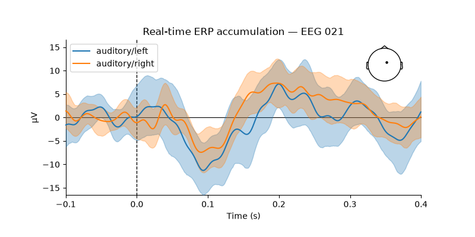
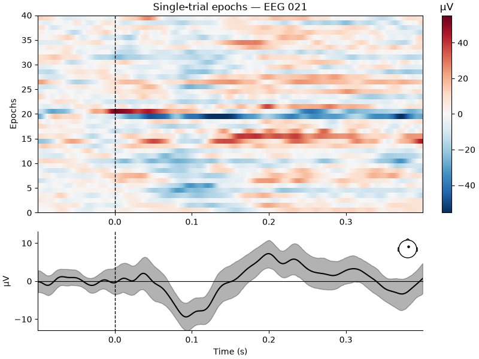

Note
Go to the end to download the full example code.
Real-time ERP accumulation — RTEpochs + epoch visualisation#
Demonstrates the full epoch-based real-time pipeline:
Stream a segment of the MNE sample dataset through a mock LSL player.
Collect event-triggered epochs trial-by-trial with
RTEpochs. A per-trialon_trialcallback receives the accumulating buffer after every accepted epoch.Inspect the accumulated evoked responses offline with matplotlib.
The four epoch visualisation windows —
TopoPlot,
ButterflyPlot,
CompareEvoked, and
TFRPlot —
open automatically when running interactively. To launch them:
mne-rt demo-erp
or drive them from your own script by passing each widget as a callback
target inside on_trial, exactly as shown in the CLI page.
Prepare demo data#
We use the MNE auditory sample dataset (downloaded once, ~1.5 GB). The recording contains clear N100 / P200 components on a clean stimulus channel — ideal for accumulating ERP responses in real time.
import os
import sys
import time
import threading
os.environ.setdefault("MPLBACKEND", "Agg")
import mne
import numpy as np
import matplotlib.pyplot as plt
data_path = mne.datasets.sample.data_path()
raw_full = mne.io.read_raw_fif(
str(data_path) + "/MEG/sample/sample_audvis_raw.fif",
preload=True, verbose=False,
)
raw_full.filter(1.0, 40.0, verbose=False)
raw_demo = raw_full.copy().crop(tmax=270.0)
mock_path = "/tmp/mne_rt_ex_erp_raw.fif"
raw_demo.save(mock_path, overwrite=True, verbose=False)
print(f"Demo file: {raw_demo.times[-1]:.0f} s, {len(raw_demo.ch_names)} channels")
Demo file: 270 s, 376 channels
Connect RTEpochs to the mock stream#
RTEpochs wraps EpochsStream and
adds a per-trial on_trial(n_accepted, data, event_code, condition)
callback that fires after every accepted epoch. This is the hook that the
Qt plot windows use to update in real time.
Here the triggers ride on a STIM channel of the recording itself. When they
arrive on a separate LSL marker stream instead – what a PsychoPy paradigm
publishes – name that stream in connect_to_lsl() and
event_channels refers to a channel of it:
rt.connect_to_lsl(stream_name="ANT", event_stream_name="psychopy_markers")
See that method’s Notes for what the marker outlet has to look like.
from mne_rt import RTEpochs
STIM_CH = "STI 014"
EVENT_ID = {"auditory/left": 1, "auditory/right": 2}
TMIN, TMAX = -0.1, 0.4
N_TRIALS = 40
rt = RTEpochs(
event_id = EVENT_ID,
event_channels = STIM_CH,
tmin = TMIN,
tmax = TMAX,
baseline = (None, 0),
picks = "eeg",
reject = {"eeg": 150e-6},
)
rt.connect_to_lsl(mock_lsl=True, fname=mock_path, timeout=15.0)
epochs_info = rt.epochs_stream_.info.copy() # save before disconnect
ch_names = list(epochs_info["ch_names"])
sfreq = epochs_info["sfreq"]
n_times = int(round((TMAX - TMIN) * sfreq)) + 1
times = np.linspace(TMIN, TMAX, n_times)
print(f"RTEpochs connected — {len(ch_names)} EEG channels, {sfreq:.0f} Hz")
RTEpochs connected — 60 EEG channels, 601 Hz
Register an on_trial callback and collect epochs#
rt._buf_[:n_accepted] holds the full accumulated epoch array
(n_accepted, n_channels, n_times) at each call.
rt._cond_list_ mirrors the condition label for every accepted epoch.
epoch_buf: dict[str, list[np.ndarray]] = {c: [] for c in EVENT_ID}
update_times: list[float] = []
def on_trial(n_accepted: int, data: np.ndarray,
event_code: int, condition: str) -> None:
t0 = time.perf_counter()
# Latest epoch is the last row of the buffer
latest = rt._buf_[n_accepted - 1] # (n_ch, n_times)
epoch_buf[condition].append(latest.copy())
update_times.append((time.perf_counter() - t0) * 1000)
rt.on_trial = on_trial
done = threading.Event()
def _collect():
rt.run(n_trials=N_TRIALS, show_erp=False)
done.set()
print(f"Collecting {N_TRIALS} trials …")
threading.Thread(target=_collect, daemon=True).start()
done.wait(timeout=120)
rt.disconnect()
n_left = len(epoch_buf["auditory/left"])
n_right = len(epoch_buf["auditory/right"])
print(f"Accepted: {n_left} left + {n_right} right = {n_left + n_right} total")
if update_times:
print(f"Callback latency: mean={np.mean(update_times):.2f} ms "
f"max={np.max(update_times):.2f} ms")
Collecting 40 trials …
Accepted: 21 left + 19 right = 40 total
Callback latency: mean=0.02 ms max=0.22 ms
Compare evoked responses with MNE#
Wrap each accepted epoch as an EvokedArray and pass a list
per condition to mne.viz.plot_compare_evokeds(). This gives
automatically computed 95 % confidence intervals via bootstrapping and
MNE’s publication-ready styling.
evokeds: dict[str, list[mne.EvokedArray]] = {}
for cond, buf in epoch_buf.items():
if buf:
evokeds[cond] = [
mne.EvokedArray(trial, info=epochs_info, tmin=TMIN,
nave=1, comment=cond)
for trial in buf
]
fig = mne.viz.plot_compare_evokeds(
evokeds,
picks = ["EEG 021"],
ci = 0.95,
show_sensors = "upper right",
truncate_yaxis = False,
show = False,
title = "Real-time ERP accumulation — EEG 021",
)
# plot_compare_evokeds returns a list of figures
figs = fig if isinstance(fig, list) else [fig]
for f in figs:
f.set_size_inches(8, 4)
f.tight_layout()
plt.show()

/home/runner/work/mne-rt/mne-rt/examples/ex_erp_plots.py:166: UserWarning: This figure includes Axes that are not compatible with tight_layout, so results might be incorrect.
f.tight_layout()
/home/runner/work/mne-rt/mne-rt/examples/ex_erp_plots.py:166: UserWarning: The figure layout has changed to tight
f.tight_layout()
Single-trial epoch image#
Assemble all accepted epochs into an Epochs object and use
mne.viz.plot_epochs_image() to show the per-trial amplitude at
EEG 021 together with the running average and an ERP inset.
all_data = np.concatenate(
[np.stack(epoch_buf[c]) for c in EVENT_ID if epoch_buf[c]], axis=0
)
all_events = np.column_stack([
np.arange(len(all_data)),
np.zeros(len(all_data), int),
np.ones(len(all_data), int),
])
epochs_obj = mne.EpochsArray(
all_data, info=epochs_info, events=all_events,
tmin=TMIN, baseline=(None, 0),
)
fig_img = mne.viz.plot_epochs_image(
epochs_obj,
picks = ["EEG 021"],
show = False,
title = "Single-trial epochs — EEG 021",
)[0]
fig_img.set_size_inches(8, 6)
plt.show()

Total running time of the script: (1 minutes 55.114 seconds)